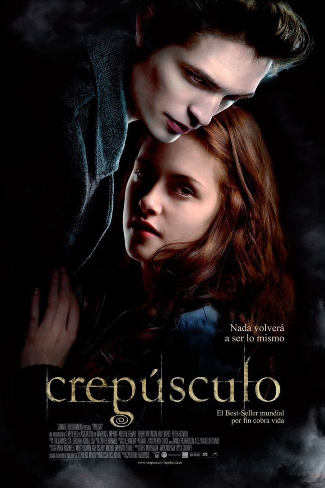

Sobre a Saga
A saga Crepúsculo A saga Crepúsculo, escrita por Stephenie Meyer, é uma saga de filmes que mistura romance, mistério e fantasia, explorando temas como amor proibido, imortalidade e as complexas relações entre seres humanos e criaturas sobrenaturais.
A história gira em torno de Bella Swan, uma jovem que se muda para a pequena cidade de Forks, no estado de Washington, e se apaixona por Edward Cullen, um vampiro. Ao longo de quatro filmes, a saga narra a evolução de seu relacionamento, seus desafios e a luta para conciliar os mundos humano e sobrenatural.
Filmes da Saga
- Crepúsculo (2008)
- Lua Nova (2009)
- Eclipse (2010)
- Amanhecer - Parte 1 (2011)
- Amanhecer - Parte 2 (2012)
Crepúsculo (2008)
O primeiro filme da saga nos apresenta Bella Swan, uma adolescente que se muda para Forks para morar com seu pai, Charlie, após a separação dos pais. Lá, ela conhece Edward Cullen, um misterioso e bonito estudante, que é parte de uma família igualmente peculiar. Bella logo descobre que Edward é um vampiro, mas, ao contrário de outras lendas, ele e sua família se alimentam apenas de sangue animal, evitando caçar seres humanos.
A atração instantânea entre eles se transforma em um romance apaixonado, mas também perigoso. Edward tenta se afastar de Bella para protegê-la, temendo que seu lado vampírico seja um risco para ela. No entanto, a atração é irresistível, e Bella se envolve cada vez mais com ele, explorando o dilema de amar alguém que representa uma ameaça para sua própria vida. A história ganha tensão quando outros vampiros, mais agressivos e predadores, chegam à cidade, colocando em risco a vida de Bella.
O final do filme é marcado por um confronto com um dos vampiros, James, que tenta matar Bella. A família Cullen intercede para protegê-la, e, embora Bella seja salva, ela está cada vez mais imersa no mundo dos vampiros.
Lua Nova (2009)
Em Lua Nova, o relacionamento entre Bella e Edward passa por uma grande crise. Após um evento trágico durante o aniversário de Bella, Edward decide deixá-la para protegê-la de si mesmo e de sua natureza vampírica. Bella fica devastada com a partida de Edward e mergulha em uma depressão profunda. Ela se isola de todos à sua volta, mas acaba encontrando consolo na amizade de Jacob Black, um jovem que revela ser um lobisomem.
A conexão de Bella e Jacob se fortalece ao longo do filme, e ela começa a encontrar um novo tipo de conforto e felicidade. No entanto, o vínculo de Bella com Edward nunca desaparece completamente. Bella, em sua dor, busca uma forma de sentir a presença de Edward e se envolve em situações perigosas para, de alguma forma, "ouvi-lo" novamente. Ao fazer isso, ela acaba desencadeando uma série de eventos que atraem novamente a atenção dos vampiros, culminando no retorno de Edward, que acredita erroneamente que Bella morreu.
O filme culmina em uma sequência de eventos em Volterra, na Itália, onde Edward, desesperado por pensar que Bella estava morta, está prestes a se entregar aos Volturi, uma família de vampiros governantes. Bella, com a ajuda de Alice (irmã de Edward), o impede, e o casal se reúne, com Edward agora decidido a nunca mais deixá-la.
Eclipse (2010)

Eclipse é o terceiro filme da saga e continua a história do amor turbulento entre Bella e Edward, mas também aborda a crescente tensão com Jacob, que agora revela sua paixão por Bella e sua natureza de lobisomem. Este filme lida com as complicações da escolha de Bella entre os dois: Edward, o vampiro imortal, e Jacob, o lobisomem com quem ela desenvolve uma conexão profunda, mas de um tipo diferente.
Enquanto isso, uma ameaça maior se aproxima: um exército de vampiros está sendo criado por Victoria, uma vampira vingativa que quer se vingar de Bella pela morte de seu companheiro James. A guerra iminente entre os vampiros e os lobisomens leva a um grande confronto em Seattle, e Bella, Edward e Jacob precisam se unir para enfrentar essa ameaça. A tensão entre os personagens é palpável, especialmente quando Bella precisa tomar uma decisão difícil sobre seu futuro.
Ao longo do filme, Bella finalmente decide que quer ficar com Edward, mesmo sabendo que isso significa abrir mão de sua vida humana. Ela aceita seu destino e pede a Edward que a transforme em vampira, o que, apesar das suas próprias hesitações, ele concorda. No entanto, Jacob fica profundamente magoado com a escolha de Bella, e a amizade deles é colocada à prova.
Amanhecer - Parte 1 (2011)
Em Amanhecer – Parte 1, o quarto e último filme da saga Crepúsculo começa com o tão esperado casamento de Bella Swan e Edward Cullen. O casamento acontece em uma cerimônia simples, mas cheia de emoção, em que Bella finalmente se torna esposa de Edward, prometendo ficar com ele para sempre. Após o casamento, o casal viaja para uma ilha particular, onde passam a lua de mel.
Logo após a lua de mel, Bella descobre que está grávida, e a gravidez se desenvolve a uma velocidade alarmante. O feto, que é híbrido (metade vampiro e metade humano), cresce rapidamente, colocando a vida de Bella em grave risco. Edward, preocupado, deseja que ela aborte a criança, mas Bella se recusa. O estado de saúde de Bella se deteriora devido à gestação acelerada, e ela fica cada vez mais frágil. O clímax do filme ocorre quando Bella, já muito debilitada, dá à luz a uma filha chamada Renesmee, que, para surpresa de todos, é saudável e cresce rapidamente.
No final, Bella morre durante o parto, mas é transformada por Edward em vampira para sobreviver e assim preservar sua vida.
Amanhecer - Parte 2 (2012)
Amanhecer – Parte 2 começa com Bella já transformada em vampira. Ela luta para se acostumar com a sua nova vida imortal e com a transformação que a deixou mais forte e ágil. Bella agora é mãe de Renesmee, que cresce rapidamente e mostra habilidades especiais, como a capacidade de mostrar suas memórias para outras pessoas por meio do toque.
A família Cullen e seus aliados, incluindo Jacob Black, que agora tem uma ligação profunda com Renesmee, precisam enfrentar um grande desafio quando os Volturi, os governantes dos vampiros, ficam sabendo da existência de Renesmee. Eles acreditam que ela é uma criança imortal, algo proibido entre os vampiros, e decidem exterminá-la. Os Cullen, então, começam a reunir aliados de várias partes do mundo para provar que Renesmee não é uma ameaça e que não deve ser morta.
A tensão culmina em um confronto entre os Cullen e os Volturi, mas, ao contrário do que todos esperavam, a batalha é evitada graças à habilidade de Alice Cullen, que mostra aos Volturi que Renesmee é uma criança híbrida, não uma criança imortal. Isso resolve o conflito e os Volturi aceitam que Renesmee e os Cullen não representam perigo.
No final, Bella e Edward celebram sua vida juntos, com sua filha e seus amigos, agora em paz. A saga termina com um clima de felicidade e esperança para o futuro da família Cullen.
Personagens Principais
Curiosidades
Uma curiosidade interessante sobre o filme Amanhecer – Parte 1 e Parte 2 é que, durante as filmagens, Robert Pattinson (Edward Cullen) teve que aprender a fazer o parto de Bella em uma das cenas mais intensas da história.
Na sequência em que Bella dá à luz a Renesmee, o processo é mostrado de uma forma dramática, com Bella quase morrendo durante o parto.
Para essa cena, Pattinson teve que aprender a realizar uma manobra de emergência, o que envolvia simular um parto de forma convincente, mas sem ser um procedimento real.
O elenco passou por um treinamento específico para garantir que as cenas fossem realistas e seguras para todos os envolvidos.
A intensidade emocional dessa sequência foi uma das mais desafiadoras tanto para os atores quanto para a equipe de produção.